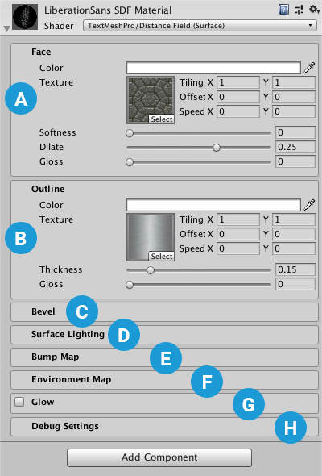
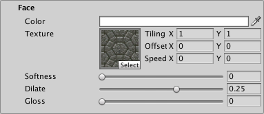
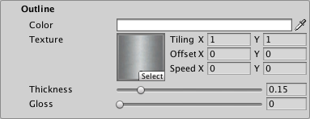
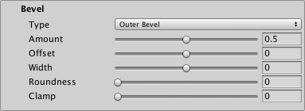
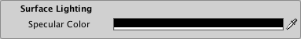
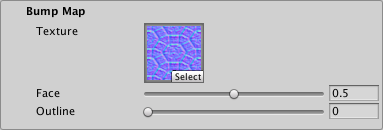
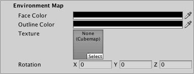
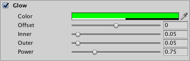
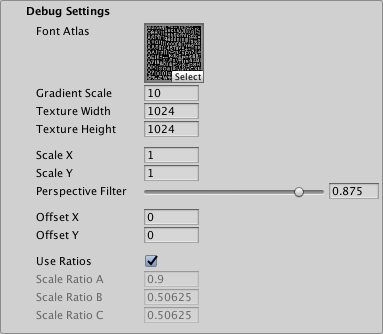

Distance Field (Surface) 表面着色器类似 Distance Field，但会与场景灯光交互，而不是模拟局部方向光。它不是基于物理的着色器。
这款着色器使用了Unity的表面着色器框架，这使得它非常灵活，但对GPU更有要求。
属性

字面（Face）: 控制文本字面的外观。
 描边（Outline）: 控制文本描边的外观。
描边（Outline）: 控制文本描边的外观。
 倒角（Bevel）: 在原始文本下方再渲染一层文本，例如用于添加投影。
倒角（Bevel）: 在原始文本下方再渲染一层文本，例如用于添加投影。
 SurfaceLighting: 控制文本上模拟局部光照的外观。
SurfaceLighting: 控制文本上模拟局部光照的外观。
凹凸贴图（Bump Map）: 使用法线贴图纹理为字面和／或描边增加凹凸感。
环境贴图（Environment Map）: 使用法线贴图纹理为字面和／或描边增加反射效果。（译注：原文如此；环境反射属性在下文使用 Cubemap 描述。）
发光（Glow）: 为文本添加平滑的外轮廓，以模拟发光。
调试设置（Debug Settings）: 显示内部着色器属性，有时可用于排查问题。
字面（Face）
在 TextMesh Pro 对象的 Inspector 中编辑 Distance Field Surface 的属性。属性分为多个区域，部分属性组需先启用才能生效。

| 属性： | 说明 | |
|---|---|---|
| 颜色（Color） | 调整文本的字面颜色。 你在这里设置的值乘以顶点 颜色（Colors） 相乘；该顶点颜色在 TextMeshPro 组件中设置。 设置为白色以使用原始顶点颜色。 设为黑色可抵消顶点颜色。 同样，设置Alpha为 1 使用原始顶点颜色的Alpha,同时设置为 0 使原始顶点颜色中的 Alpha 不再起作用。 |
|
| 纹理（Texture） | 应用一个纹理到文本字面。 纹理会与字面的 颜色（Color） 以及 TextMesh Pro 组件中的顶点颜色相乘，产生最终字面颜色。 水平映射（Horizontal Mapping） 和 垂直映射（Vertical Mapping） 属性决定 TextMesh Pro 如何将纹理映射到文本字面。 |
|
| 平铺（Tiling） | 增大这些值，可根据 TextMesh Pro 对象的 Horizontal Mapping 和 Vertical Mapping 属性，让纹理在文本表面重复。 | |
| 偏移（Offset） | 调整这些值，以改变文本表面的水平或垂直相对位置。 | |
| 速度（Speed） | 设置大于以下值的数值，可使字面纹理产生动画： 0. 纹理 UV 坐标随时间变化，产生纹理滚动动画。 注意： 要在 Scene 视图中观察此效果，必须启用 动画材质（Animated Materials） ，在以下位置的 Effects 菜单中启用： Scene 视图控制栏（Scene view control bar）. |
|
| 柔化（Softness） | 调整文本边缘的柔和程度。 数值为 0 会产生清晰的抗锯齿边缘。 数值大于 0 会使边缘越来越柔和／模糊。 此设置同时作用于文本字面和描边。 |
|
| 膨胀（Dilate） | 调整文本轮廓在字体以下资源中的位置： 距离场. 数值为 0 将轮廓放在渐变中点，对应原始字体的轮廓。 负值使字符变细，正值使字符变粗。 |
|
| 光泽（Gloss） | 调整文本字面的光泽度。 光泽度决定光照射到文本时镜面高光的外观。值越高，镜面高光越小。 |
描边（Outline）
说明

| 属性： | 说明 |
|---|---|
| 颜色（Color） | 调整文本描边的颜色。 必须设置以下属性，描边才会可见： 厚度（Thickness） 值大于 0. |
| 纹理（Texture） | 为文本描边应用纹理。 纹理与描边的 颜色（Color） 相乘，得到最终描边颜色。 水平映射（Horizontal Mapping） 和 垂直映射（Vertical Mapping） TextMesh Pro 组件中的以下属性决定纹理如何适配文本描边： |
| 平铺（Tiling） | |
| 偏移（Offset） | |
| 速度（Speed） | 设为大于 0 的值，使描边纹理产生动画。 纹理 UV 坐标随时间变化，产生纹理滚动动画。 注意： 要在 Scene 视图中观察此效果，必须启用 动画材质（Animated Materials） ，在以下位置的 Effects 菜单中启用： Scene 视图控制栏（Scene view control bar）. |
| 厚度（Thickness） | 调整描边厚度，数值越大，线越粗。 描边沿文本轮廓绘制，一半厚度在轮廓内，另一半在轮廓外。 可通过调整以下属性，让描边进一步向内或向外移动： Face > Dilate（字面 > 膨胀） 属性中。 |
| 光泽（Gloss） | 调整文本描边的光泽度。 光泽度决定光照射到文本时镜面高光的外观。值越高，镜面高光越小。 |
倒角（Bevel）
倒角为文本制造深度感，类似法线贴图，但着色器直接通过字体的有符号距离场计算倒角。
倒角容易出现视觉伪影，尤其是倒角过强时。伪影的明显程度取决于材质。有时在简单材质上很明显的伪影，在更复杂的材质上几乎看不出来。
虽然倒角在带描边的文本上效果最好，也可以用于不带描边的文本。

| 属性： | 说明 | |
|---|---|---|
| 类型（Type） | 选择要应用的倒角类型 | |
| 外倒角（Outer Bevel） | 产生具有倾斜侧面的凸起文字。 倒角从描边外侧开始，高度逐渐增加，直到描边内侧。 |
|
| 内倒角（Inner Bevel） | 产生描边凸起的文本。 倒角从描边外侧开始，高度增加到描边中部后，再逐渐降低，直到内侧。 |
|
| 强度（Amount） | 调整倒角的陡峭程度。 此设置定义倒角较低与较高区域之间的表观高度差。 |
|
| 偏移（Offset） | 将倒角偏离通常位置，使其不再与描边对齐。 不同偏移量会产生差别很大的倒角效果。 为无描边文本应用倒角时，这一设置尤其有用。 |
|
| 宽度 | 调整倒角大小。 设为 0 ，使倒角覆盖描边的完整厚度。 正值使倒角超出描边两侧。 负值使倒角向描边中部收缩。 为无描边文本设置倒角时，必须为以下属性设置正值： 宽度。还应设置负的 偏移（Offset） 值，以确保整个倒角都可见。 |
|
| 圆滑度（Roundness） | 增大此值可平滑倒角中较为棱角分明的区域；效果通常比较细微。 | |
| 钳制（Clamp） | 设置这个值以限制倒角的最大高度。 较高的值意味着倒角更快地达到最高高度。 钳制后的外倒角会在到达描边内边缘之前结束。 钳制后的内倒角会在描边中部形成较大的平坦区域。 |
表面光照（Surface Lighting）
这些设置控制模拟的局部方向光照，与 Bevel、Bump Map 和 Environment Map 设置共同作用。

| 属性： | 说明 |
|---|---|
| 镜面反射颜色（Specular Color） | 设置镜面高光的颜色。 这些高光来自文本对模拟局部光源的直接反射。 |
凹凸贴图（Bump Map）
法线贴图可用作凹凸贴图，为文本增加凹凸感。它同时影响字面和描边，两者强度可分别控制；倒角与凹凸贴图同时存在时，会混合两种效果。

| 属性： | 说明 |
|---|---|
| 纹理（Texture） | 选择用作凹凸贴图的法线贴图纹理。 |
| 字面（Face） | 控制凹凸贴图对文本字面的影响程度。 数值为 0 没有效果，而值为 1 显示凹凸贴图的完整效果。 |
| 描边（Outline） | 控制凹凸贴图对文本描边的影响程度。 数值为 0 无任何显示，而值为 1 显示凹凸贴图的完整效果。 |
环境贴图（Environment Map）
环境贴图可为字面或描边添加反射效果，用于静态场景反射或特殊图像效果。移动端着色器不支持此功能。环境纹理为 Cubemap，可提供静态资源，也可通过脚本在运行时创建。

| 属性： | 说明 |
|---|---|
| 字面颜色（Face Color） | 选择用于为文本字面反射着色的颜色。 此颜色先与环境贴图相乘，再将反射效果应用到文本字面。 设为黑色时，环境贴图不影响文本字面。 设为白色时，环境贴图在文本字面上以完整强度显示。 |
| 描边颜色（Outline Color） | 选择用于给描边反射着色的颜色。 先将此颜色与环境贴图相乘，再将反射效果应用到描边。 此颜色设为黑色时，环境贴图对描边没有影响。 此颜色设为白色时，环境贴图对描边的作用达到完整强度。 |
| 纹理（Texture） | 选择立方体贴图纹理作为环境贴图。 |
| 旋转（Rotation） | 旋转环境贴图，控制反射中可见的纹理部分。可为旋转制作动画，产生运动感。 |
发光（Glow）
发光（Glow） 效果在其他文本效果之上增加平滑轮廓，通常用于模拟发光。它使用加法混合，因此在深色背景上更明显。
发光扩展到文本边界外时，表面着色器会将其视为实体文本的一部分进行着色，因此会获得镜面高光等模拟光照效果。

| 属性： | 说明 |
|---|---|
| 颜色（Color） | 通过调整以下属性，设置发光效果的颜色和强度： 颜色（Color） 和 Alpha 分别对应的值。 |
| 偏移（Offset） | 调整发光效果的中心。 数值为 0 将发光效果的中心放在文本轮廓上。 正值使中心向轮廓外侧移动，负值使其向文本中心移动。 |
| 内部（Inner） | 控制发光从起点（文本轮廓 + 偏移（Offset））。 |
| 外部（Outer） | 控制发光从文本轮廓向外延伸的距离，起点为文本轮廓 + Offset。 |
| 强度（Power） | 控制发光效果从中心到边缘的衰减方式。 数值为 1 产生强烈、明亮的发光效果，并采用陡峭的线性衰减。 较小值使发光强度先快速下降，之后再缓慢衰减。 |
调试设置（Debug Settings）
调试区域提供着色器的部分内部属性，可帮助排查着色器问题。

| 属性： | 说明 | |
|---|---|---|
| 字体图集（Font Atlas） | 指向字体资源所使用的图集纹理。 | |
| 渐变缩放（Gradient Scale） | 表示字体以下数据的扩展范围： 有符号距离场. 这决定了以下材质属性的有效范围，例如 Outline > Width（描边宽度）（Outline > Width） 和 Underlay > Offset X/Y（底层偏移）（Underlay > Offset X/Y）. 此值等于 Padding + 1，其中 Padding 是 内边距 在创建字体资源时设置的值。 注意： 此值仅用于调试，不应手动编辑。 |
|
| 纹理宽度／高度（Texture Width/Texture Height） | 显示以下设置中指定的纹理图集宽度和高度： 图集分辨率（Atlas Resolution） ，这些值在创建字体资源时确定。 | |
| Scale X／Scale X（原文字段名称如此） | 设置 SDF 缩放的乘数。 设为 0时，字符会渲染成块状。 负值使字符更柔和，正值使字符看起来更锐利。 |
|
| 透视过滤（Perspective Filter） | 使用透视摄像机时，调整此设置，使文本在以较大倾斜角度观察时看起来更柔和。 默认值 0.875 在多数情况下足够。 使用正交摄像机时，将此值设为 0. |
|
| 水平／垂直偏移（Offset X/Offset Y） | 在 X 和 Y 方向偏移各字符的顶点位置。 可通过脚本改变这些值，模拟爬行或滚动效果。 |